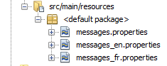
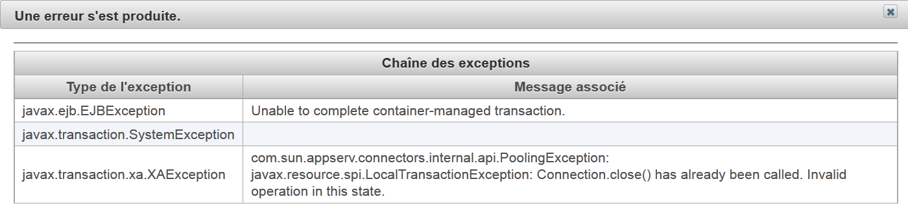
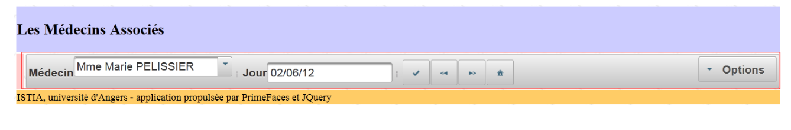
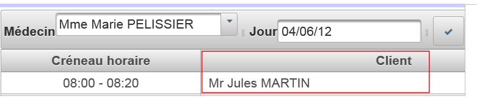
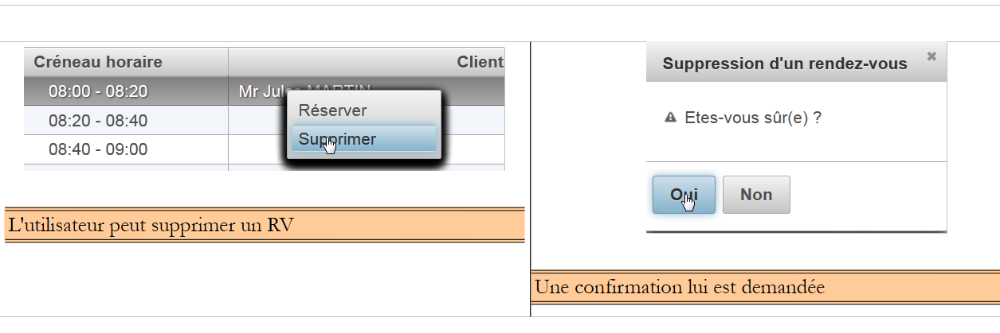
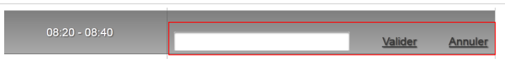
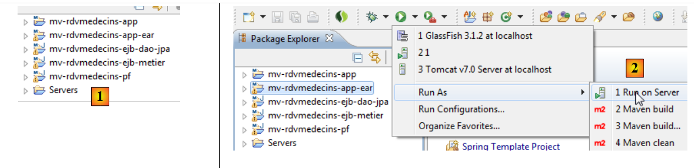
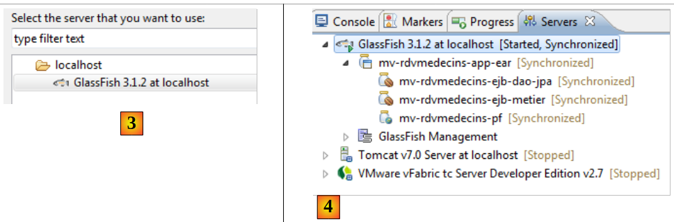

6. Application exemple-03 : rdvmedecins-pf-ejb
Rappelons la structure de l'application exemple développée pour le serveur Glassfish :
 |
Nous ne changeons rien à cette architecture si ce n'est la couche web qui sera ici réalisée à l'aide de JSF et Primefaces.
 |
6.1. Le projet Netbeans
Ci-dessus, les couches [métier] et [DAO] sont celles de l'exemple 01 JSF / EJB / Glassfish. Nous les réutilisons.
 |
- [mv-rdvmedecins-ejb-dao-jpa] : projet EJB des couches [DAO] et [JPA] de l'exemple 01,
- [mv-rdvmedecins-ejb-metier] : projet EJB de la couche [métier] de l'exemple 01,
- [mv-rdvmedecins-pf] : projet de la couche [web] / Primefaces – nouveau,
- [mv-rdvmedecins-app-ear] : projet d'entreprise pour déployer l'application sur le serveur Glassfish – nouveau.
6.2. Le projet d'entreprise
Le projet d'entreprise ne sert qu'au déploiement des trois modules [mv-rdvmedecins-ejb-dao-jpa], [mv-rdvmedecins-ejb-metier], [mv-rdvmedecins-pf] sur le serveur Glassfish. Le projet Netbeans est le suivant :
 |
Le projet n'existe que pour ces trois dépendances [1] définies dans le fichier [pom.xml] de la façon suivante :
<?xml version="1.0" encoding="UTF-8"?>
<project xmlns="http://maven.apache.org/POM/4.0.0" xmlns:xsi="http://www.w3.org/2001/XMLSchema-instance" xsi:schemaLocation="http://maven.apache.org/POM/4.0.0 http://maven.apache.org/xsd/maven-4.0.0.xsd">
<modelVersion>4.0.0</modelVersion>
<parent>
<artifactId>mv-rdvmedecins-app</artifactId>
<groupId>istia.st</groupId>
<version>1.0-SNAPSHOT</version>
</parent>
<groupId>istia.st</groupId>
<artifactId>mv-rdvmedecins-app-ear</artifactId>
<version>1.0-SNAPSHOT</version>
<packaging>ear</packaging>
<name>mv-rdvmedecins-app-ear</name>
...
<dependencies>
<dependency>
<groupId>${project.groupId}</groupId>
<artifactId>mv-rdvmedecins-ejb-dao-jpa</artifactId>
<version>${project.version}</version>
<type>ejb</type>
</dependency>
<dependency>
<groupId>${project.groupId}</groupId>
<artifactId>mv-rdvmedecins-ejb-metier</artifactId>
<version>${project.version}</version>
<type>ejb</type>
</dependency>
<dependency>
<groupId>${project.groupId}</groupId>
<artifactId>mv-rdvmedecins-pf</artifactId>
<version>${project.version}</version>
<type>war</type>
</dependency>
</dependencies>
</project>
- lignes 10-13 : l'artifact Maven du projet d'entreprise,
- lignes 18-37 : les trois dépendances du projet. On notera bien le type de celles-ci (lignes 23, 29, 35).
Pour exécuter l'application web, il faudra exécuter ce projet d'entreprise.
6.3. Le projet web Primefaces
Le projet web Primefaces est le suivant :
 |
- en [1], les pages du projet. La page [index.xhtml] est l'unique page du projet. Elle comporte trois fragments [form1.xhtml], [form2.xhtml] et [erreur.xhtml]. Les autres pages ne sont là que pour la mise en forme.
- en [2], les beans Java. Le bean [Application] de portée application, le bean [Form] de portée session. La classe [Erreur] encapsule une erreur. La classe [MyDataModel] sert de modèle à une balise <dataTable> de Primefaces,
- en [3], les fichiers de messages pour l'internationalisation,
- en [4], les dépendances. Le projet web a des dépendances sur le projet EJB de la couche [DAO], le projet EJB de la couche [métier] et Primefaces pour la couche [web].
6.4. La configuration du projet
La configuration du projet est celle des projets Primefaces ou JSF que nous avons étudiés. Nous listons les fichiers de configuration sans les réexpliquer.
 |  |
[web.xml] : configure l'application web.
<?xml version="1.0" encoding="UTF-8"?>
<web-app version="3.0" xmlns="http://java.sun.com/xml/ns/javaee" xmlns:xsi="http://www.w3.org/2001/XMLSchema-instance" xsi:schemaLocation="http://java.sun.com/xml/ns/javaee http://java.sun.com/xml/ns/javaee/web-app_3_0.xsd">
<context-param>
<param-name>javax.faces.STATE_SAVING_METHOD</param-name>
<param-value>client</param-value>
</context-param>
<context-param>
<param-name>javax.faces.PROJECT_STAGE</param-name>
<param-value>Production</param-value>
</context-param>
<context-param>
<param-name>javax.faces.FACELETS_SKIP_COMMENTS</param-name>
<param-value>true</param-value>
</context-param>
<servlet>
<servlet-name>Faces Servlet</servlet-name>
<servlet-class>javax.faces.webapp.FacesServlet</servlet-class>
<load-on-startup>1</load-on-startup>
</servlet>
<servlet-mapping>
<servlet-name>Faces Servlet</servlet-name>
<url-pattern>/faces/*</url-pattern>
</servlet-mapping>
<session-config>
<session-timeout>
30
</session-timeout>
</session-config>
<welcome-file-list>
<welcome-file>faces/index.xhtml</welcome-file>
</welcome-file-list>
<error-page>
<error-code>500</error-code>
<location>/faces/exception.xhtml</location>
</error-page>
<error-page>
<exception-type>Exception</exception-type>
<location>/faces/exception.xhtml</location>
</error-page>
</web-app>
On notera, ligne 30 que la page [index.xhtml] est la page d'accueil de l'application.
[faces-config.xml] : configure l'application JSF
<?xml version='1.0' encoding='UTF-8'?>
<!-- =========== FULL CONFIGURATION FILE ================================== -->
<faces-config version="2.0"
xmlns="http://java.sun.com/xml/ns/javaee"
xmlns:xsi="http://www.w3.org/2001/XMLSchema-instance"
xsi:schemaLocation="http://java.sun.com/xml/ns/javaee http://java.sun.com/xml/ns/javaee/web-facesconfig_2_0.xsd">
<application>
<resource-bundle>
<base-name>
messages
</base-name>
<var>msg</var>
</resource-bundle>
<message-bundle>messages</message-bundle>
</application>
</faces-config>
[beans.xml] : vide mais nécessaire pour l'annotation @Named
<?xml version="1.0" encoding="UTF-8"?>
<beans xmlns="http://java.sun.com/xml/ns/javaee"
xmlns:xsi="http://www.w3.org/2001/XMLSchema-instance"
xsi:schemaLocation="http://java.sun.com/xml/ns/javaee http://java.sun.com/xml/ns/javaee/beans_1_0.xsd">
</beans>
[styles.css] : la feuille de style de l'application
.col1{
background-color: #ccccff
}
.col2{
background-color: #ffcccc
}
La bibliothèque Primefaces vient avec ses propres feuilles de style. La feuille de style ci-dessus n'est utilisée que pour la page à afficher en cas d'exception, une page non gérée par l'application. C'est la page [exception.xhtml] qui est alors affichée.
[messages_fr.properties] : le fichier des messages en français
# layout
layout.entete=Les M\u00e9decins Associ\u00e9s
layout.basdepage=ISTIA, universit\u00e9 d'Angers - application propuls\u00e9e par PrimeFaces et JQuery
# exception
exception.header=L'exception suivante s'est produite
exception.httpCode=Code HTTP de l'erreur
exception.message=Message de l'exception
exception.requestUri=Url demand\u00e9e lors de l'erreur
exception.servletName=Nom de la servlet demand\u00e9e lorsque l'erreur s'est produite
# formulaire 1
form1.titre=R\u00e9servations
form1.medecin=M\u00e9decin
form1.jour=Jour
form1.options=Options
form1.francais=Fran\u00e7ais
form1.anglais=Anglais
form1.rafraichir=Rafra\u00eechir
form1.precedent=Jour pr\u00e9c\u00e9dent
form1.suivant=Jour suivant
form1.agenda=Affiche l'agenda du m\u00e9decin choisi pour le jour choisi
form1.today=Aujourd'hui
# formulaire 2
form2.titre=Agenda de {0} {1} {2} le {3}
form2.titre_detail=Agenda de {0} {1} {2} le {3}
form2.creneauHoraire=Cr\u00e9neau horaire
form2.client=Client
form2.accueil=Accueil
form2.supprimer=Supprimer
form2.reserver=R\u00e9server
form2.valider=Valider
form2.annuler=Annuler
form2.erreur=Erreur
form2.emtyMessage=Pas de cr\u00e9neaux entr\u00e9s dans la base
form2.suppression.confirmation=Etes-vous s\u00fbr(e) ?
form2.suppression.message=Suppression d'un rendez-vous
form2.supprimer.oui=Oui
form2.supprimer.non=Non
form2.erreurClient=Client [{0}] inconnu
form2.erreurClient_detail=Client {0} inconnu
form2.erreurAction=Action non autoris\u00e9e
form2.erreurAction_detail=Action non autoris\u00e9e
# erreur
erreur.titre=Une erreur s'est produite.
erreur.exceptions=Cha\u00eene des exceptions
erreur.type=Type de l'exception
erreur.message=Message associ\u00e9
erreur.accueil=Accueil
[messages_en.properties] : le fichier des messages en anglais
# layout
layout.entete=Associated Doctors
layout.basdepage=ISTIA, Angers university - Application powered by PrimeFaces and JQuery
# exception
exception.header=The following exceptions occurred
exception.httpCode=Error HTTP code
exception.message=Exception message
exception.requestUri=Url targeted when error occurred
exception.servletName=Servlet targeted's name when error occurred
# formulaire 1
form1.titre=Reservations
form1.medecin=Doctor
form1.jour=Date
form1.options=Options
form1.francais=French
form1.anglais=English
form1.rafraichir=Refresh
form1.precedent=Previous Day
form1.suivant=Next day
form1.agenda=Show the doctor's diary for the chosen doctor and the chosen day
form1.today=Today
# formulaire 2
form2.titre={0} {1} {2}'' diary on {3}
form2.titre_detail={0} {1} {2}'' diary on {3}
form2.creneauHoraire=Time Period
form2.client=Client
form2.accueil=Welcome Page
form2.supprimer=Delete
form2.reserver=Reserve
form2.valider=Submit
form2.annuler=Cancel
form2.erreur=Error
form2.emtyMessage=No Time periods in the database
form2.suppression.confirmation=Are-you sure ?
form2.suppression.message=Booking deletion
form2.supprimer.oui=Yes
form2.supprimer.non=No
form2.erreurClient=Unknown Client {0}
form2.erreurClient_detail=Unknown Client [{0}]
form2.erreurAction=Unauthorized action
form2.erreurAction_detail=Action non autoris\u00e9e
# erreur
erreur.titre=The following exceptions occurred
erreur.exceptions=Exceptions' chain
erreur.type=Exception type
erreur.message=Associated Message
erreur.accueil=Welcome
6.5. Le modèle des pages [layout.xhtml]
 |
Le modèle [layout.xhtml] est le suivant :
<?xml version='1.0' encoding='UTF-8' ?>
<!DOCTYPE html PUBLIC "-//W3C//DTD XHTML 1.0 Transitional//EN" "http://www.w3.org/TR/xhtml1/DTD/xhtml1-transitional.dtd">
<html xmlns="http://www.w3.org/1999/xhtml"
xmlns:h="http://java.sun.com/jsf/html"
xmlns:p="http://primefaces.org/ui"
xmlns:f="http://java.sun.com/jsf/core"
xmlns:ui="http://java.sun.com/jsf/facelets">
<f:view locale="#{form.locale}">
<h:head>
<title>JSF</title>
<h:outputStylesheet library="css" name="styles.css"/>
</h:head>
<h:body style="background-image: url('#{request.contextPath}/resources/images/standard.jpg');">
<h:form id="formulaire">
<table style="width: 1200px">
<tr>
<td colspan="2" bgcolor="#ccccff">
<ui:include src="entete.xhtml"/>
</td>
</tr>
<tr>
<td style="width: 10px;" bgcolor="#ffcccc">
<ui:include src="menu.xhtml"/>
</td>
<td>
<p:outputPanel id="contenu">
<ui:insert name="contenu">
<h2>Contenu</h2>
</ui:insert>
</p:outputPanel>
</td>
</tr>
<tr bgcolor="#ffcc66">
<td colspan="2">
<ui:include src="basdepage.xhtml"/>
</td>
</tr>
</table>
</h:form>
</h:body>
</f:view>
</html>
L'unique partie variable de ce modèle est la zone des lignes 28-30. Cette zone se trouve dans la zone d'id :formulaire:contenu (ligne 27). On s'en souviendra. Les appels AJAX qui mettent à jour cette zone auront l'attribut update=":formulaire:contenu". Par ailleurs, le formulaire commence à la ligne 15. Donc le fragment inséré en lignes 28-30 s'insère dans ce formulaire.
L'aspect donné par ce modèle est le suivant :
 |
La partie dynamique de la page viendra s'insérer dans la zone encadrée ci-dessus.
6.6. La page [index.xhtml]
 |
Le projet affiche toujours la même page, la page [index.xhtml] suivante :
<?xml version='1.0' encoding='UTF-8' ?>
<!DOCTYPE html PUBLIC "-//W3C//DTD XHTML 1.0 Transitional//EN" "http://www.w3.org/TR/xhtml1/DTD/xhtml1-transitional.dtd">
<html xmlns="http://www.w3.org/1999/xhtml"
xmlns:h="http://java.sun.com/jsf/html"
xmlns:p="http://primefaces.org/ui"
xmlns:f="http://java.sun.com/jsf/core"
xmlns:ui="http://java.sun.com/jsf/facelets">
<ui:composition template="layout.xhtml">
<ui:define name="contenu">
<ui:fragment rendered="#{form.form1Rendered}">
<ui:include src="form1.xhtml"/>
</ui:fragment>
<ui:fragment rendered="#{form.form2Rendered}">
<ui:include src="form2.xhtml"/>
</ui:fragment>
<ui:fragment rendered="#{form.erreurRendered}">
<ui:include src="erreur.xhtml"/>
</ui:fragment>
</ui:define>
</ui:composition>
</html>
- lignes 8-9 : ce fragment XHTML viendra s'insérer dans la zone dynamique du modèle [layout.xhtml],
- la page comprend trois sous-fragments :
- [form1.xhtml], lignes 10-12 ;
- [form2.xhtml], lignes 13-15 ;
- [erreur.xhtml], lignes 16-18.
La présence de ces fragments dans [index.xhtml] est contrôlée par des booléens du modèle [Form.java] associé à la page. Donc en jouant sur ceux-ci, la page rendue diffère.
Le fragment [form1.xhtml] a le rendu suivant :
 |
Le fragment [form2.xhtml] a le rendu suivant :
 |
Le fragment [erreur.xhtml] a le rendu suivant :
 |
6.7. Les beans du projet
 |
La classe du paquetage [utils] a déjà été présentée : la classe [Messages] est une classe qui facilite l'internationalisation des messages d'une application. Elle a été étudiée au paragraphe 2.8.5.7.
6.7.1. Le bean Application
Le bean [Application.java] est un bean de portée application. On se rappelle que ce type de bean sert à mémoriser des données en lecture seule et disponibles pour tous les utilisateurs de l'application. Ce bean est le suivant :
package beans;
import javax.ejb.EJB;
import javax.enterprise.context.ApplicationScoped;
import javax.inject.Named;
import rdvmedecins.metier.service.IMetierLocal;
@Named(value = "application")
@ApplicationScoped
public class Application {
// couche métier
@EJB
private IMetierLocal metier;
public Application() {
}
// getters
public IMetierLocal getMetier() {
return metier;
}
}
- ligne 8 : on donne au bean le nom application,
- ligne 9 : il est de portée application,
- lignes 13-14 : une référence sur l'interface locale de la couche [métier] lui sera injectée par le conteneur EJB du serveur d'application. Rappelons-nous l'architecture de l'application :
 |
L'application JSF et l'EJB [Metier] vont s'exécuter dans la même JVM (Java Virtual Machine). Donc la couche [JSF] va utiliser l'interface locale de l'EJB. C'est tout. Le bean [Application] ne contient rien d'autre. Pour avoir accès à la couche [métier], les autres beans iront la chercher dans ce bean.
6.7.2. Le bean [Erreur]
La classe [Erreur] est la suivante :
- package beans;
public class Erreur {
public Erreur() {
}
// champ
private String classe;
private String message;
// constructeur
public Erreur(String classe, String message){
this.setClasse(classe);
this.message=message;
}
// getters et setters
...
}
- ligne 9, le nom d'une classe d'exception si une exception a été lancée,
- ligne 10 : un message d'erreur.
6.7.3. Le bean [Form]
Son code est le suivant :
package beans;
import java.io.IOException;
...
@Named(value = "form")
@SessionScoped
public class Form implements Serializable {
public Form() {
}
// bean Application
@Inject
private Application application;
// cache de la session
private List<Medecin> medecins;
private List<Client> clients;
private Map<Long, Medecin> hMedecins = new HashMap<Long, Medecin>();
private Map<Long, Client> hClients = new HashMap<Long, Client>();
private Map<String, Client> hIdentitesClients = new HashMap<String, Client>();
// modèle
private Long idMedecin;
private Date jour = new Date();
private Boolean form1Rendered = true;
private Boolean form2Rendered = false;
private Boolean erreurRendered = false;
private String form2Titre;
private AgendaMedecinJour agendaMedecinJour;
private Long idCreneauChoisi;
private Medecin medecin;
private Long idClient;
private CreneauMedecinJour creneauChoisi;
private List<Erreur> erreurs;
private Boolean erreur = false;
private String identiteClient;
private String action;
private String msgErreurClient;
private Boolean erreurClient;
private String msgErreurAction;
private Boolean erreurAction;
private String locale = "fr";
@PostConstruct
private void init() {
// on met les médecins et les clients en cache
try {
medecins = application.getMetier().getAllMedecins();
clients = application.getMetier().getAllClients();
} catch (Throwable th) {
// on note l'erreur
prepareVueErreur(th);
return;
}
// les dictionnaires
for (Medecin m : medecins) {
hMedecins.put(m.getId(), m);
}
for (Client c : clients) {
hClients.put(c.getId(), c);
hIdentitesClients.put(identite(c), c);
}
}
...
// affichage vue
private void setForms(Boolean form1Rendered, Boolean form2Rendered, Boolean erreurRendered) {
this.form1Rendered = form1Rendered;
this.form2Rendered = form2Rendered;
this.erreurRendered = erreurRendered;
}
// préparation vueErreur
private void prepareVueErreur(Throwable th) {
// on crée la liste des erreurs
erreurs = new ArrayList<Erreur>();
erreurs.add(new Erreur(th.getClass().getName(), th.getMessage()));
while (th.getCause() != null) {
th = th.getCause();
erreurs.add(new Erreur(th.getClass().getName(), th.getMessage()));
}
// la vue des erreurs est affichée
setForms(true, false, true);
}
// getters et setters
...
}
- lignes 6-8 : la classe [Form] est un bean de nom form et de portée session. On rappelle qu'alors la classe doit être sérialisable,
- lignes 14-15 : le bean form a une référence sur le bean application. Celle-ci sera injectée par le conteneur de servlets dans lequel s'exécute l'application (présence de l'annotation @Inject).
- lignes 17-44 : le modèle des pages [form1.xhtml, form2.xhtml, erreur.xhtml]. L'affichage de ces pages est contrôlé par les booléens des lignes 27-29. On remarquera que par défaut, c'est la page [form1.xhtml] qui est rendue (ligne 27),
- lignes 46-47 : la méthode init est exécutée juste après l'instanciation de la classe (présence de l'annotation @PostConstruct),
- lignes 50-51 : on demande à la couche [métier], la liste des médecins et des clients,
- lignes 59-65 : si tout s'est bien passé, les dictionnaires des médecins et des clients sont construits. Ils sont indexés par leur numéro. Ensuite, la page [form1.xhtml] sera affichée (ligne 27),
- ligne 54 : en cas d'erreur, le modèle de la page [erreur.xhtml] est construit. Ce modèle est la liste d'erreurs de la ligne 36,
- lignes 78-88 : la méthode [prepareVueErreur] construit la liste d'erreurs à afficher. La page [index.xhtml] affiche alors les fragments [form1.xhtml] et [erreur.xhtml] (ligne 87).
La page [erreur.xhtml] est la suivante :
<?xml version='1.0' encoding='UTF-8' ?>
<!DOCTYPE html PUBLIC "-//W3C//DTD XHTML 1.0 Transitional//EN" "http://www.w3.org/TR/xhtml1/DTD/xhtml1-transitional.dtd">
<html xmlns="http://www.w3.org/1999/xhtml"
xmlns:h="http://java.sun.com/jsf/html"
xmlns:p="http://primefaces.org/ui"
xmlns:f="http://java.sun.com/jsf/core"
xmlns:ui="http://java.sun.com/jsf/facelets">
<body>
<p:panel header="#{msg['erreur.titre']}" closable="true" >
<hr/>
<p:dataTable value="#{form.erreurs}" var="erreur">
<f:facet name="header">
<h:outputText value="#{msg['erreur.exceptions']}"/>
</f:facet>
<p:column>
<f:facet name="header">
<h:outputText value="#{msg['erreur.type']}"/>
</f:facet>
<h:outputText value="#{erreur.classe}"/>
</p:column>
<p:column>
<f:facet name="header">
<h:outputText value="#{msg['erreur.message']}"/>
</f:facet>
<h:outputText value="#{erreur.message}"/>
</p:column>
</p:dataTable>
</p:panel>
</body>
</html>
Elle utilise une balise <p:dataTable> (lignes 12-28) pour afficher la liste des erreurs. Cela donne une page d'erreur analogue à la suivante :
 |
Nous allons maintenant définir les différentes phases de la vie de l'application. Pour chaque action de l'utilisateur, nous étudierons les vues concernées et les gestionnaires des événements.
6.8. L'affichage de la page d'accueil
Si tout va bien, la première page affichée est [form1.xhtml]. Cela donne la vue suivante :
 |
La page [form1.xhtml] est la suivante :
<?xml version='1.0' encoding='UTF-8' ?>
<!DOCTYPE html PUBLIC "-//W3C//DTD XHTML 1.0 Transitional//EN" "http://www.w3.org/TR/xhtml1/DTD/xhtml1-transitional.dtd">
<html xmlns="http://www.w3.org/1999/xhtml"
xmlns:h="http://java.sun.com/jsf/html"
xmlns:p="http://primefaces.org/ui"
xmlns:f="http://java.sun.com/jsf/core"
xmlns:ui="http://java.sun.com/jsf/facelets">
<p:toolbar>
<p:toolbarGroup align="left">
...
</p:toolbarGroup>
<p:toolbarGroup align="right">
...
</p:toolbarGroup>
</p:toolbar>
</html>
La barre d'outils encadrée dans la copie d'écran est le composant Primefaces Toolbar. Celui-ci est défini aux lignes 8-14. Il contient deux groupes de composants chacun étant défini par une balise <toolbarGroup>, lignes 9-11 et 12-14. L'un des groupes est aligné à gauche de la barre d'outils (ligne 9), l'autre à droite (ligne 12).
Examinons certains composants du groupe de gauche :
<p:toolbar>
<p:toolbarGroup align="left">
<h:outputText value="#{msg['form1.medecin']}"/>
<p:selectOneMenu value="#{form.idMedecin}" effect="fade">
<f:selectItems value="#{form.medecins}" var="medecin" itemLabel="#{medecin.titre} #{medecin.prenom} #{medecin.nom}" itemValue="#{medecin.id}"/>
<p:ajax update=":formulaire:contenu" listener="#{form.hideAgenda}" />
</p:selectOneMenu>
<p:separator/>
<h:outputText value="#{msg['form1.jour']}"/>
<p:calendar id="calendrier" value="#{form.jour}" readOnlyInputText="true">
<p:ajax event="dateSelect" listener="#{form.hideAgenda}" update=":formulaire:contenu"/>
</p:calendar>
<p:separator/>
<p:commandButton id="resa-agenda" icon="ui-icon-check" actionListener="#{form.getAgenda}" update=":formulaire:contenu"/>
<p:tooltip for="resa-agenda" value="#{msg['form1.agenda']}"/>
...
</p:toolbarGroup>
...
- lignes 4-7 : le combo des médecins auquel on a ajouté un effet (effect="fade"),
- ligne 6 : un comportement AJAX. Lorsqu'il y aura un changement dans le combo, la méthode [Form].hideAgenda (listener="#{form.hideAgenda}") sera exécutée et la zone dynamique :formulaire:contenu (update=":formulaire:contenu") sera mise à jour,
- ligne 8 : inclut un séparateur dans la barre d'outils,
- lignes 10-12 : la zone de saisie de la date. On utilise ici le calendrier de Primefaces. La zone de saisie est en lecture seule (readOnlyInputText="true"),
- ligne 11 : un comportement AJAX. Lorsqu'il y aura un changement de date, la méthode [Form].hideAgenda sera exécutée et la zone dynamique :formulaire:contenu mise à jour,
- ligne 14 : un bouton. Un clic dessus fait exécuter un appel AJAX vers la méthode [Form].getAgenda (), le modèle sera alors modifié et la réponse du serveur sera utilisée pour mettre à jour la zone dynamique :formulaire:contenu,
- ligne 15 : la balise <tooltip> permet d'associer une bulle d'aide à un composant. L'id de ce dernier est désigné par l'attribut for du tooltip. Ici (for="resa-agenda") désigne le bouton de la ligne 14 :
 |  |
Cette page est alimentée par le modèle suivant :
@Named(value = "form")
@SessionScoped
public class Form implements Serializable {
public Form() {
}
// cache de la session
private List<Medecin> medecins;
private List<Client> clients;
// modèle
private Long idMedecin;
private Date jour = new Date();
// liste des médecins
public List<Medecin> getMedecins() {
return medecins;
}
// liste des clients
public List<Client> getClients() {
return clients;
}
// agenda
public void getAgenda() {
...
}
- le champ de la ligne 12 alimente en lecture et écriture la valeur de la liste de la ligne 4 de la page. A l'affichage initial de la page, elle fixe la valeur sélectionnée dans le combo. A l'affichage initial, idMedecin est égal à null, donc c'est le premier médecin qui sera sélectionné,
- la méthode des lignes 16-18 génère les éléments du combo des médecins (ligne 5 de la page). Chaque option générée aura pour label (itemLabel) les titre, nom, prénom du médecin et pour valeur (itemValue), l'id du médecin,
- le champ de la ligne 13 alimente en lecture / écriture le champ de saisie de la ligne 10 de la page. A l'affichage initial, c'est donc la date du jour qui est affichée,
- lignes 26-28 : la méthode getAgenda gère le clic sur le bouton [Agenda] de la ligne 14 de la page. Elle est quasi identique à ce qu'elle était dans la version JSF :
// bean Application
@Inject
private Application application;
// cache de la session
private List<Medecin> medecins;
private Map<Long, Medecin> hMedecins = new HashMap<Long, Medecin>();
// modèle
private Long idMedecin;
private Date jour = new Date();
private Boolean form1Rendered = true;
private Boolean form2Rendered = false;
private Boolean erreurRendered = false;
private AgendaMedecinJour agendaMedecinJour;
private Long idCreneauChoisi;
private CreneauMedecinJour creneauChoisi;
private List<Erreur> erreurs;
private Boolean erreur = false;
public void getAgenda() {
try {
// on récupère le médecin
medecin = hMedecins.get(idMedecin);
// l'agenda du médecin pour un jour donné
agendaMedecinJour = application.getMetier().getAgendaMedecinJour(medecin, jour);
// on affiche le formulaire 2
setForms(true, true, false);
} catch (Throwable th) {
// vue des erreurs
prepareVueErreur(th);
}
// aucun créneau choisi pour l'instant
creneauChoisi = null;
}
Nous ne commenterons pas ce code. Cela a déjà été fait.
6.9. Afficher l'agenda d'un médecin
6.9.1. Vue d'ensemble de l'agenda
C'est le cas d'utilisation suivant :
 |
- en [1], on sélectionne un médecin [1] et un jour [2] puis on demande [3] l'agenda du médecin pour le jour choisi,
- en [4], celui-ci apparaît sous la barre d'outils.
Le code de la page [form2.xhtml] est le suivant :
<?xml version='1.0' encoding='UTF-8' ?>
<!DOCTYPE html PUBLIC "-//W3C//DTD XHTML 1.0 Transitional//EN" "http://www.w3.org/TR/xhtml1/DTD/xhtml1-transitional.dtd">
<html xmlns="http://www.w3.org/1999/xhtml"
xmlns:h="http://java.sun.com/jsf/html"
xmlns:p="http://primefaces.org/ui"
xmlns:f="http://java.sun.com/jsf/core"
xmlns:ui="http://java.sun.com/jsf/facelets"
xmlns:c="http://java.sun.com/jsp/jstl/core">
<body>
<!-- menu contextuel -->
<p:contextMenu for="agenda">
...
</p:contextMenu>
<!-- agenda -->
<p:dataTable id="agenda" value="#{form.myDataModel}" var="creneauMedecinJour" style="width: 800px"
selectionMode="single" selection="#{form.creneauChoisi}" emptyMessage="#{msg['form2.emtyMessage']}">
<!-- colonne des horaires -->
<p:column style="width: 100px">
...
</p:column>
<!-- colonne des clients -->
<p:column style="width: 300px">
...
</p:column>
</p:dataTable>
<!-- confirmation suppression RV -->
<p:confirmDialog id="confirmDialog" message="#{msg['form2.suppression.confirmation']}"
header="#{msg['form2.suppression.message']}" severity="alert" widgetVar="confirmation">
...
</p:confirmDialog>
<!-- message d'erreur -->
<p:dialog header="#{msg['form2.erreur']}" widgetVar="dlgErreur" height="100" >
...
</p:dialog>
<!-- gestion du retour serveur -->
<script type="text/javascript">
...
}
</script>
</body>
</html>
- lignes 16-26 : l'élément principal de la page est la table <dataTable> qui affiche l'agenda du médecin,
 |
- lignes 12-14 : nous utiliserons un menu contextuel pour ajouter / supprimer un rendez-vous :
 |
- lignes 29-32 : une boîte de confirmation sera affichée lorsque l'utilisateur voudra supprimer un rendez-vous :
 |
- lignes 35-37 : une boîte de dialogue sera utilisée pour signaler une erreur :
 |
- lignes 40-43 : nous aurons besoin d'introduire un peu de Javascript.
6.9.2. Le tableau des rendez-vous
Nous abordons ici le modèle d'un tableau de données tel qu'étudié au paragraphe 5.15, page 327.
Examinons l'élément principal de la page, le tableau qui affiche l'agenda :
<p:dataTable id="agenda" value="#{form.myDataModel}" var="creneauMedecinJour" style="width: 800px"
selectionMode="single" selection="#{form.creneauChoisi}" emptyMessage="#{msg['form2.emtyMessage']}">
<!-- colonne des horaires -->
<p:column style="width: 100px">
...
</p:column>
<!-- colonne des clients -->
<p:column style="width: 300px">
...
</p:column>
</p:dataTable>
Le rendu est le suivant :
 |
C'est un tableau à deux colonnes (lignes 4-6 et 8-10) alimenté par la source [Form].getMyDataModel() (value="#{form.myDataModel}"). Une seule ligne peut être sélectionnée à la fois (selectionMode="single"). A chaque POST, une référence de l'élément sélectionné est affectée à [Form].creneauChoisi (selection="#{form.creneauChoisi}").
On se rappelle que la méthode getAgenda a initialisé le champ suivant dans le modèle :
// modèle
private AgendaMedecinJour agendaMedecinJour;
Le modèle du tableau est obtenu par appel de la méthode [Form].getMyDataModel (attribut value de la balise <dataTable>) suivante :
// le modèle du dataTable
public MyDataModel getMyDataModel() {
return new MyDataModel(agendaMedecinJour.getCreneauxMedecinJour());
}
Examinons la classe [MyDataModel] qui sert de modèle à la balise <p:dataTable> :
package beans;
import javax.faces.model.ArrayDataModel;
import org.primefaces.model.SelectableDataModel;
import rdvmedecins.metier.entites.CreneauMedecinJour;
public class MyDataModel extends ArrayDataModel<CreneauMedecinJour> implements SelectableDataModel<CreneauMedecinJour> {
// constructeurs
public MyDataModel() {
}
public MyDataModel(CreneauMedecinJour[] creneauxMedecinJour) {
super(creneauxMedecinJour);
}
@Override
public Object getRowKey(CreneauMedecinJour creneauMedecinJour) {
return creneauMedecinJour.getCreneau().getId();
}
@Override
public CreneauMedecinJour getRowData(String rowKey) {
// liste des créneaux
CreneauMedecinJour[] creneauxMedecinJour = (CreneauMedecinJour[]) getWrappedData();
// la clé est un entier long
long key = Long.parseLong(rowKey);
// on recherche le créneau sélectionné
for (CreneauMedecinJour creneauMedecinJour : creneauxMedecinJour) {
if (creneauMedecinJour.getCreneau().getId().longValue() == key) {
return creneauMedecinJour;
}
}
// rien
return null;
}
}
- ligne 7 : la classe [MyDataModel] est le modèle de la balise <p:dataTable>. Cette classe a pour but de faire le lien entre l'élément rowkey qui est posté, avec l'élément associé à cette ligne,
- ligne 7 : la classe implémente l'interface [SelectableDataModel] au travers de la classe [ArrayDataModel]. Cela signifie que le paramètre du constructeur est un tableau. C'est ce tableau qui alimente la balise <dataTable>. Ici chaque ligne du tableau sera associée à un élément de type [CreneauMedecinJour],
- lignes 13-15 : le constructeur passe son paramètre à sa classe parent,
- lignes 18-20 : chaque ligne du tableau correspond à un créneau horaire et sera identifiée par l'id du créneau horaire (ligne 19). C'est cet id qui sera posté au serveur,
- ligne 23 : le code qui sera exécuté côté serveur lorsque l'id d'un créneau horaire sera posté. Le but de cette méthode est de rendre la référence de l'objet [CreneauMedecinJour] associé à cet id. Cette référence sera affectée à la cible de l'attribut selection de la balise <dataTable> :
<p:dataTable id="agenda" value="#{form.myDataModel}" var="creneauMedecinJour" style="width: 800px"
selectionMode="single" selection="#{form.creneauChoisi}" emptyMessage="#{msg['form2.emtyMessage']}">
Le champ [Form].creneauChoisi contiendra donc la référence de l'objet [CreneauMedecinJour] qu'on veut ajouter ou supprimer.
6.9.3. La colonne des créneaux horaires
 |
La colonne des créneaux horaires est obtenue avec le code suivant :
<p:dataTable id="agenda" value="#{form.myDataModel}" var="creneauMedecinJour" style="width: 800px"
selectionMode="single" selection="#{form.creneauChoisi}" emptyMessage="#{msg['form2.emtyMessage']}">
<!-- colonne des horaires -->
<p:column style="width: 100px">
<f:facet name="header">
<h:outputText value="#{msg['form2.creneauHoraire']}"/>
</f:facet>
<div align="center">
<h:outputFormat value="{0,number,#00}:{1,number,#00} - {2,number,#00}:{3,number,#00}">
<f:param value="#{creneauMedecinJour.creneau.hdebut}" />
<f:param value="#{creneauMedecinJour.creneau.mdebut}" />
<f:param value="#{creneauMedecinJour.creneau.hfin}" />
<f:param value="#{creneauMedecinJour.creneau.mfin}" />
</h:outputFormat>
</div>
</p:column>
<!-- colonne des clients -->
<p:column style="width: 300px">
...
</p:column>
</p:dataTable>
- lignes 5-7 : l'entête de la colonne,
- lignes 8-15 : l'élément courant de la colonne. On notera ligne 9, l'utilisation de la balise <h:outputFormat> qui permet de formater des éléments à afficher. Le paramètre value indique la chaîne de caractères à afficher. La notation {i,type,format} désigne le paramètre n° i, le type de ce paramètre et son format. Il y a ici 4 paramètres numérotés de 0 à 3, le type de ceux-ci est numérique et il seront affichés avec deux chiffres,
- lignes 10-13 : les quatre paramètres attendus par la balise <h:outputFormat>.
6.9.4. La colonne des clients
 |
La colonne des clients est obtenue avec le code suivant :
<!-- agenda -->
<p:dataTable id="agenda" value="#{form.myDataModel}" var="creneauMedecinJour" style="width: 800px"
selectionMode="single" selection="#{form.creneauChoisi}" emptyMessage="#{msg['form2.emtyMessage']}">
<!-- colonne des horaires -->
...
<!-- colonne des clients -->
<p:column style="width: 300px">
<f:facet name="header">
<h:outputText value="#{msg['form2.client']}"/>
</f:facet>
<ui:fragment rendered="#{creneauMedecinJour.rv!=null}">
<h:outputText value="#{creneauMedecinJour.rv.client.titre} #{creneauMedecinJour.rv.client.prenom} #{creneauMedecinJour.rv.client.nom}" />
</ui:fragment>
<ui:fragment rendered="#{creneauMedecinJour.rv==null and form.creneauChoisi!=null and form.creneauChoisi.creneau.id==creneauMedecinJour.creneau.id}">
...
</ui:fragment>
</p:column>
</p:dataTable>
- lignes 8-10 : l'entête de la colonne,
- lignes 11-13 : l'élément courant lorsqu'il y a un rendez-vous pour le créneau horaire. Dans ce cas, on affiche les titre, prénom et nom du client pour qui ce rendez-vous a été pris,
- lignes 14-16 : un autre fragment sur lequel nous reviendrons.
6.10. Suppression d'un rendez-vous
La suppression d'un rendez-vous correspond à la séquence suivante :
 |
 |
La vue concernée par cette action est la suivante :
<!-- menu contextuel -->
<p:contextMenu for="agenda">
...
<p:menuitem value="#{msg['form2.supprimer']}" onclick="confirmation.show()"/>
</p:contextMenu>
<!-- agenda -->
<p:dataTable id="agenda" value="#{form.myDataModel}" var="creneauMedecinJour" style="width: 800px"
selectionMode="single" selection="#{form.creneauChoisi}" emptyMessage="#{msg['form2.emtyMessage']}">
...
</p:dataTable>
<!-- confirmation suppression RV -->
<p:confirmDialog id="confirmDialog" message="#{msg['form2.suppression.confirmation']}"
header="#{msg['form2.suppression.message']}" severity="alert" widgetVar="confirmation">
<p:commandButton value="#{msg['form2.supprimer.oui']}" update=":formulaire:contenu" action="#{form.action}"
oncomplete="handleRequest(xhr, status, args); confirmation.hide()">
<f:setPropertyActionListener value="supprimer" target="#{form.action}"/>
</p:commandButton>
<p:commandButton value="#{msg['form2.supprimer.non']}" onclick="confirmation.hide()" type="button" />
</p:confirmDialog>
- lignes 2-5 : un menu contextuel lié au tableau de données (attribut for). Il a deux options [1] :
 |
- ligne 4 : l'option [Supprimer] déclenche l'affichage de la boîte de dialogue [2] des lignes 13-20,
- ligne 15 : le clic sur le [Oui] déclenche l'exécution de [Form.action] qui va supprimer le rendez-vous. Normalement, le menu contextuel ne devrait pas offrir l'option [Supprimer] si l'élément sélectionné n'a pas de rendez-vous, et pas l'option [Réserver] si l'élément sélectionné a un rendez-vous. Nous n'avons pas réussi à ce que le menu contextuel soit aussi subtil. On y arrive pour le premier élément sélectionné mais ensuite on constate que le menu contextuel garde la configuration acquise pour cette première sélection. Il devient alors incorrect. Donc on a gardé les deux options et on a décidé de fournir un retour à l'utilisateur s'il supprimait un élément sans rendez-vous,
- ligne 16 : l'attribut oncomplete qui permet de définir du code Javascript à exécuter après exécution de l'appel AJAX. Ce code sera ici le suivant :
<!-- message d'erreur -->
<p:dialog header="#{msg['form2.erreur']}" widgetVar="dlgErreur" height="100" >
<h:outputText value="#{form.msgErreur}" />
</p:dialog>
<!-- gestion du retour serveur -->
<script type="text/javascript">
function handleRequest(xhr, status, args) {
// erreur ?
if(args.erreur) {
dlgErreur.show();
}
}
</script>
- ligne 10 : le code Javascript regarde si le dictionnaire args a l'attribut erreur. Si oui, il fait afficher la boîte de dialogue de la ligne 2 (attribut widgetVar). Cette boîte affiche le modèle [Form].msgErreur.
Regardons le code exécuté pour gérer la suppression d'un rendez-vous :
<p:confirmDialog ...>
<p:commandButton value="#{msg['form2.supprimer.oui']}" update=":formulaire:contenu" action="#{form.action}"
...>
<f:setPropertyActionListener value="supprimer" target="#{form.action}"/>
</p:commandButton>
...
</p:confirmDialog>
- ligne 2 : la méthode [Form].action va être exécutée,
- ligne 4 : avant son exécution, le champ action aura reçu la valeur 'supprimer'.
La méthode [action] est la suivante :
// action sur RV
public void action() {
// selon l'action désirée
if (action.equals("supprimer")) {
supprimer();
}
...
}
public void supprimer() {
// faut-il faire qq chose ?
Rv rv = creneauChoisi.getRv();
if (rv == null) {
signalerActionIncorrecte();
return;
}
try {
// suppression d'un Rdv
application.getMetier().supprimerRv(rv);
// on remet à jour l'agenda
agendaMedecinJour = application.getMetier().getAgendaMedecinJour(medecin, jour);
// on affiche form2
setForms(true, true, false);
} catch (Throwable th) {
// vue erreurs
prepareVueErreur(th);
}
// raz du créneau choisi
creneauChoisi = null;
}
- ligne 4 : si l'action est 'supprimer', on exécute la méthode [supprimer],
- ligne 12 : on récupère le rendez-vous du créneau sélectionné. On rappelle que [creneauChoisi] a été initialisé par la référence de l'élément [CreneauMedecinJour] sélectionné,
- si ce rendez-vous existe, il est supprimé (ligne 19), l'agenda est régénéré (ligne 21) puis réaffiché (ligne 23),
- si la suppression a échoué, on affiche la page d'erreurs (ligne 26),
- si l'élément sélectionné n'a pas de rendez-vous (ligne 13) alors on est dans la situation où l'utilisateur a cliqué [Supprimer] sur un créneau qui n'a pas de rendez-vous. On signale cette erreur :
 |
La méthode [signalerActionIncorrecte] est la suivante :
// signaler une action incorrecte
private void signalerActionIncorrecte() {
// raz créneau choisi
creneauChoisi = null;
// erreur
msgErreur = Messages.getMessage(null, "form2.erreurAction", null).getSummary();
RequestContext.getCurrentInstance().addCallbackParam("erreur", true);
}
- ligne 4 : on enlève la sélection,
- ligne 6 : on génère un message d'erreur internationalisé,
- ligne 7 : on ajoute dans le dictionnaire args de l'appel AJAX l'attribut ('erreur', true).
Revenons au code XHTML du bouton [Oui] :
<p:commandButton value="#{msg['form2.supprimer.oui']}" update=":formulaire:contenu" action="#{form.action}"
oncomplete="handleRequest(xhr, status, args); confirmation.hide()">
- ligne 2 : après exécution de la méthode [Form].action, la méthode Javascript handleRequest est exécutée :
<!-- message d'erreur -->
<p:dialog header="#{msg['form2.erreur']}" widgetVar="dlgErreur" height="100" >
<h:outputText value="#{form.msgErreur}" />
</p:dialog>
<!-- gestion du retour serveur -->
<script type="text/javascript">
function handleRequest(xhr, status, args) {
// erreur ?
if(args.erreur) {
dlgErreur.show();
}
}
</script>
- ligne 10 : on regarde si le dictionnaire args a l'attribut nommé 'erreur'. Si oui, la boîte de dialogue de la ligne 2 est affichée,
- ligne 3 : elle fait afficher le message d'erreur construit par le modèle.
6.11. Prise de rendez-vous
La prise de rendez-vous correspond à la séquence suivante :
 |
La vue impliquée par cette action est la suivante :
<!-- menu contextuel -->
<p:contextMenu for="agenda">
<p:menuitem value="#{msg['form2.reserver']}" update=":formulaire:contenu" action="#{form.action}" oncomplete="handleRequest(xhr, status, args)">
<f:setPropertyActionListener value="reserver" target="#{form.action}"/>
</p:menuitem>
...
</p:contextMenu>
<!-- agenda -->
<p:dataTable id="agenda" value="#{form.myDataModel}" var="creneauMedecinJour" style="width: 800px"
selectionMode="single" selection="#{form.creneauChoisi}" emptyMessage="#{msg['form2.emtyMessage']}">
<!-- colonne des horaires -->
<p:column style="width: 100px">
...
</p:column>
<!-- colonne des clients -->
<p:column style="width: 300px">
<f:facet name="header">
<h:outputText value="#{msg['form2.client']}"/>
</f:facet>
...
<ui:fragment rendered="#{creneauMedecinJour.rv==null and form.creneauChoisi!=null and form.creneauChoisi.creneau.id==creneauMedecinJour.creneau.id}">
<p:autoComplete completeMethod="#{form.completeClients}" value="#{form.identiteClient}" size="30"/>
<p:spacer width="50px"/>
<p:commandLink action="#{form.action()}" value="#{msg['form2.valider']}" update=":formulaire:contenu" oncomplete="handleRequest(xhr, status, args)">
<f:setPropertyActionListener value="valider" target="#{form.action}"/>
</p:commandLink>
<p:spacer width="50px"/>
<p:commandLink action="#{form.action()}" value="#{msg['form2.annuler']}" update=":formulaire:contenu">
<f:setPropertyActionListener value="annuler" target="#{form.action}"/>
</p:commandLink>
</ui:fragment>
</p:column>
</p:dataTable>
...
- lignes 21-31 : affichent la chose suivante :
 |
- ligne 21 : l'affichage a lieu s'il n'y a pas de rendez-vous et qu'il y a bien eu sélection et que l'id du créneau choisi correspond à celui de l'élément courant du tableau. Si on ne met pas cette condition, le fragment est affiché pour tous les créneaux,
- ligne 22 : la zone de saisie sera une zone de saisie assistée. On suppose ici qu'il peut y avoir beaucoup de clients,
- lignes 24-26 : le lien [Valider],
- lignes 28-30 : le lien [Annuler].
La zone de saisie assistée est générée par le code suivant :
<p:autoComplete completeMethod="#{form.completeClients}" value="#{form.identiteClient}" size="30"/>
La méthode [Form].completeClients est chargée de faire des propositions à l'utilisateur à partir des caractères tapés dans la zone de saisie :
 |
Les propositions sont de la forme [Nom prénom titre]. Le code de la méthode [Form].completeClients est le suivant :
// la méthode du texte autocomplete
public List<String> completeClients(String query) {
List<String> identites = new ArrayList<String>();
// on recherche les clients qui correspondent
for (Client c : clients) {
String identite = identite(c);
if (identite.toLowerCase().startsWith(query.toLowerCase())) {
identites.add(identite);
}
}
return identites;
}
private String identite(Client c) {
return c.getNom() + " " + c.getPrenom() + " " + c.getTitre();
}
- ligne 2 : query est la chaîne de caractères tapée par l'utilisateur,
- ligne 3 : la liste des propositions. Au départ une liste vide,
- lignes 5-10 : on construit les identités [Nom prénom titre] des clients. Si une identité commence par query (ligne 7), elle est retenue dans la liste des propositions (ligne 8).
6.12. Validation d'un rendez-vous
La validation d'un rendez-vous correspond à la séquence suivante :
 |  |
Le code du lien [Valider] est le suivant :
<p:commandLink action="#{form.action()}" value="#{msg['form2.valider']}" update=":formulaire:contenu" oncomplete="handleRequest(xhr, status, args)">
<f:setPropertyActionListener value="valider" target="#{form.action}"/>
</p:commandLink>
C'est donc la méthode [Form].action() qui va gérer cet évènement. Entre-temps, le modèle [Form].action aura reçu la chaîne 'valider'. Le code est le suivant :
// bean Application
@Inject
private Application application;
// cache de la session
...
private Map<String, Client> hIdentitesClients = new HashMap<String, Client>();
// modèle
private Date jour = new Date();
private Boolean form1Rendered = true;
private Boolean form2Rendered = false;
private Boolean erreurRendered = false;
private AgendaMedecinJour agendaMedecinJour;
private CreneauMedecinJour creneauChoisi;
private List<Erreur> erreurs;
private Boolean erreur = false;
private String identiteClient;
private String action;
private String msgErreur;
@PostConstruct
private void init() {
...
for (Client c : clients) {
hClients.put(c.getId(), c);
hIdentitesClients.put(identite(c), c);
}
}
// action sur RV
public void action() {
// selon l'action désirée
...
if (action.equals("valider")) {
validerResa();
}
}
// validation Rv
public void validerResa() {
// validation de la réservation
try {
// le client existe-t-il ?
Boolean erreur = !hIdentitesClients.containsKey(identiteClient);
if (erreur) {
msgErreur = Messages.getMessage(null, "form2.erreurClient", new Object[]{identiteClient}).getSummary();
RequestContext.getCurrentInstance().addCallbackParam("erreur", true);
return;
}
// on ajoute le Rv
application.getMetier().ajouterRv(jour, creneauChoisi.getCreneau(), hIdentitesClients.get(identiteClient));
// on remet à jour l'agenda
agendaMedecinJour = application.getMetier().getAgendaMedecinJour(medecin, jour);
// on affiche form2
setForms(true, true, false);
} catch (Throwable th) {
// vue erreurs
prepareVueErreur(th);
}
// raz du créneau choisi
creneauChoisi = null;
// raz client
identiteClient = null;
}
- lignes 33-35 : à cause du valeur du champ action, la méthode [validerResa] va être exécutée,
- ligne 43 : on vérifie d'abord que le client existe. En effet, dans la zone de saisie assistée, l'utilisateur a pu faire une saisie en dur sans s'aider des propositions qui lui ont été faites. La saisie assistée est associée au modèle [Form].identiteClient. On regarde donc si cette identité existe dans le dictionnaire identitesClients construit à l'instanciation du modèle (ligne 20). Celui-ci associe à une identité client de type [Nom prénom titre], le client lui-même (ligne 25),
- ligne 44 : si le client n'existe pas, on renvoie une erreur au navigateur,
- ligne 45 : un message d'erreur internationalisé,
- ligne 46 : on ajoute l'attribut ('erreur',true) au dictionnaire args de l'appel AJAX. L'appel AJAX a été défini de la façon suivante :
<p:commandLink action="#{form.action()}" value="#{msg['form2.valider']}" update=":formulaire:contenu" oncomplete="handleRequest(xhr, status, args)">
<f:setPropertyActionListener value="valider" target="#{form.action}"/>
</p:commandLink>
Ligne 3 ci-dessus, on voit que le lien [Valider] a un attribut oncomplete. C'est cet attribut qui va faire afficher le message d'erreur selon une technique déjà rencontrée.
- ligne 50 : on demande à la couche [métier] d'ajouter un rendez-vous pour le jour choisi (jour), le créneau horaire choisi (creneauChoisi.getCreneau()) et le client choisi (hIdentitesClients.get(identiteClient)),
- ligne 52 : on demande à la couche [métier] de rafraîchir l'agenda du médecin. On verra le rendez-vous ajouté plus toutes les modifications que d'autres utilisateurs de l'application ont pu faire,
- ligne 54 : on réaffiche l'agenda [form2.xhtml],
- ligne 57 : on affiche la page d'erreur si une erreur se produit.
6.13. Annulation d'une prise de rendez-vous
Cela correspond à la séquence suivante :
 |
Le bouton [Annuler] dans la page [form2.xhtml] est le suivant :
<p:commandLink action="#{form.action()}" value="#{msg['form2.annuler']}" update=":formulaire:contenu">
<f:setPropertyActionListener value="annuler" target="#{form.action}"/>
</p:commandLink>
La méthode [Form].action est donc appelée :
// action sur RV
public void action() {
// selon l'action désirée
...
if (action.equals("annuler")) {
annulerRv();
}
}
// annulation prise de Rdv
public void annulerRv() {
// on affiche form2
setForms(true, true, false);
// raz du créneau choisi
creneauChoisi = null;
// raz client
identiteClient = null;
}
6.14. Navigation dans le calendrier
La barre d'outils permet de naviguer dans le calendrier :
 |  |
 |  |
 |  |
Non montré sur les copies d'écran ci-dessus, l'agenda est mis à jour avec les rendez-vous du nouveau jour choisi.
Les balises des trois boutons concernés sont les suivantes dans [form1.xhtml] :
<p:toolbar>
<p:toolbarGroup align="left">
...
<h:outputText value="#{msg['form1.jour']}"/>
<p:calendar id="calendrier" value="#{form.jour}" readOnlyInputText="true">
<p:ajax event="dateSelect" listener="#{form.hideAgenda}" update=":formulaire:contenu"/>
</p:calendar>
<p:separator/>
<p:commandButton id="resa-agenda" icon="ui-icon-check" actionListener="#{form.getAgenda}" update=":formulaire:contenu"/>
<p:tooltip for="resa-agenda" value="#{msg['form1.agenda']}"/>
<p:commandButton id="resa-precedent" icon="ui-icon-seek-prev" actionListener="#{form.getPreviousAgenda}" update=":formulaire:contenu"/>
<p:tooltip for="resa-precedent" value="#{msg['form1.precedent']}"/>
<p:commandButton id="resa-suivant" icon="ui-icon-seek-next" actionListener="#{form.getNextAgenda}" update=":formulaire:contenu"/>
<p:tooltip for="resa-suivant" value="#{msg['form1.suivant']}"/>
<p:commandButton id="resa-today" icon="ui-icon-home" actionListener="#{form.today}" update=":formulaire:contenu"/>
<p:tooltip for="resa-today" value="#{msg['form1.today']}"/>
</p:toolbarGroup>
<p:toolbarGroup align="right">
...
</p:toolbarGroup>
</p:toolbar>
Les méthode [Form].getPreviousAgenda, [Form].getNextAgenda, [Form].today sont les suivantes :
private Date jour = new Date();
public void getPreviousAgenda() {
// on passe au jour précédent
Calendar cal = Calendar.getInstance();
cal.setTime(jour);
cal.add(Calendar.DAY_OF_YEAR, -1);
jour = cal.getTime();
// agenda
if (form2Rendered) {
getAgenda();
}
}
public void getNextAgenda() {
// on passe au jour suivant
Calendar cal = Calendar.getInstance();
cal.setTime(jour);
cal.add(Calendar.DAY_OF_YEAR, 1);
jour = cal.getTime();
// agenda
if (form2Rendered) {
getAgenda();
}
}
// agenda aujourd'hui
public void today() {
jour = new Date();
// agenda
if (form2Rendered) {
getAgenda();
}
}
- ligne 1 : le jour d'affichage de l'agenda,
- ligne 5 : on utilise un calendrier,
- ligne 6 : qu'on initialise au jour actuel de l'agenda,
- ligne 7 : on retire un jour au calendrier,
- ligne 8 : et on rénitialise avec, le jour d'affichage de l'agenda,
- ligne 11 : on réaffiche l'agenda si celui-ci est affiché. En effet, l'utilisateur peut utiliser la barre d'outils sans que l'agenda soit affiché.
Les autres méthodes sont analogues.
6.15. Changement de langue d'affichage
Le changement de langue est géré par le bouton menu de la barre d'outils :
 |
 |
Les balises du bouton menu sont les suivantes :
<p:toolbar>
<p:toolbarGroup align="left">
...
</p:toolbarGroup>
<p:toolbarGroup align="right">
<p:menuButton value="#{msg['form1.options']}">
<p:menuitem id="menuitem-francais" value="#{msg['form1.francais']}" actionListener="#{form.setFrenchLocale}" update=":formulaire"/>
<p:menuitem id="menuitem-anglais" value="#{msg['form1.anglais']}" actionListener="#{form.setEnglishLocale}" update=":formulaire"/>
<p:menuitem id="menuitem-rafraichir" value="#{msg['form1.rafraichir']}" actionListener="#{form.refresh}" update=":formulaire:contenu"/>
</p:menuButton>
</p:toolbarGroup>
</p:toolbar>
Les méthodes exécutées dans le modèle sont les suivantes :
private String locale = "fr";
public void setFrenchLocale() {
locale = "fr";
// on recharge la page
redirect();
}
public void setEnglishLocale() {
locale = "en";
// on recharge la page
redirect();
}
private void redirect() {
// on redirige le client vers la servlet
ExternalContext ctx = FacesContext.getCurrentInstance().getExternalContext();
try {
ctx.redirect(ctx.getRequestContextPath());
} catch (IOException ex) {
Logger.getLogger(Form.class.getName()).log(Level.SEVERE, null, ex);
}
}
Les méthodes des lignes 3 et 9 se contentent d'initialiser le champ locale de la ligne 1 puis redirigent le navigateur client vers la même page. Une redirection est une réponse dans laquelle le serveur demande au navigateur de charger une autre page. Le navigateur fait alors un GET vers cette nouvelle page.
- ligne 17 : [ExternalContext] est une classe JSF qui permet d'accéder à la servlet en cours d'exécution,
- ligne 19 : on fait la redirection. Le paramètre de la méthode redirect est l'URL de la page vers laquelle le navigateur client doit se rediriger. Ici nous voulons nous rediriger vers [/mv-rdvmedecins-pf] qui est le nom de notre application :
 |
la méthode [getRequestContextPath] permet d'avoir ce nom. Il va donc y avoir chargement de la page d'accueil [index.xhtml] de notre application. Cette page est associée au modèle [Form] de portée session. Ce modèle gère trois booléens qui commandent l'apparence de la page [index.xhtml] :
private Boolean form1Rendered = true;
private Boolean form2Rendered = false;
private Boolean erreurRendered = false;
Comme le modèle est de portée session, ces trois booléens ont conservé leurs valeurs. La page [index.xhtml] va donc apparaître dans l'état où elle était avant la redirection. Cette page est mise en forme avec le template facelet [layout.xhtml] suivant :
<?xml version='1.0' encoding='UTF-8' ?>
<!DOCTYPE html PUBLIC "-//W3C//DTD XHTML 1.0 Transitional//EN" "http://www.w3.org/TR/xhtml1/DTD/xhtml1-transitional.dtd">
<html xmlns="http://www.w3.org/1999/xhtml"
xmlns:h="http://java.sun.com/jsf/html"
xmlns:p="http://primefaces.org/ui"
xmlns:f="http://java.sun.com/jsf/core"
xmlns:ui="http://java.sun.com/jsf/facelets">
<f:view locale="#{form.locale}">
....
</f:view>
</html>
La balise de la ligne 9 fixe la langue d'affichage de la page avec son attribut locale. La page va donc passer en français ou en anglais selon les cas. Maintenant pourquoi une redirection ? Revenons aux balises des options de changement de langues :
<p:toolbar>
<p:toolbarGroup align="left">
...
</p:toolbarGroup>
<p:toolbarGroup align="right">
<p:menuButton value="#{msg['form1.options']}">
<p:menuitem id="menuitem-francais" value="#{msg['form1.francais']}" actionListener="#{form.setFrenchLocale}" update=":formulaire"/>
<p:menuitem id="menuitem-anglais" value="#{msg['form1.anglais']}" actionListener="#{form.setEnglishLocale}" update=":formulaire"/>
<p:menuitem id="menuitem-rafraichir" value="#{msg['form1.rafraichir']}" actionListener="#{form.refresh}" update=":formulaire:contenu"/>
</p:menuButton>
</p:toolbarGroup>
</p:toolbar>
Elles avaient été écrites initialement pour mettre à jour par un appel AJAX la zone d'id formulaire (attribut update des lignes 7 et 8). Mais aux tests, le changement de langue ne fonctionnait pas à tout coup. D'où la redirection pour résoudre ce problème. On aurait peut-être pu également mettre l'attribut ajax='false' aux balises pour provoquer un rechargement de page. Cela aurait alors évité la redirection.
6.16. Rafraîchissement des listes
Cela correspond à l'action suivante :
 |
La balise associée à l'option [Rafraîchir] est la suivante :
<p:menuitem id="menuitem-rafraichir" value="#{msg['form1.rafraichir']}" actionListener="#{form.refresh}" update=":formulaire:contenu"/>
La méthode [Form].refresh est la suivante :
public void refresh() {
// on rafraîchit les listes
init();
}
La méthode init est la méthode exécutée juste après la construction du bean [Form]. Elle a pour objet de mettre en cache des données de la base de données dans le modèle :
// bean Application
@Inject
private Application application;
// cache de la session
private List<Medecin> medecins;
private List<Client> clients;
private Map<Long, Medecin> hMedecins = new HashMap<Long, Medecin>();
private Map<Long, Client> hClients = new HashMap<Long, Client>();
private Map<String, Client> hIdentitesClients = new HashMap<String, Client>();
...
@PostConstruct
private void init() {
// on met les médecins et les clients en cache
try {
medecins = application.getMetier().getAllMedecins();
clients = application.getMetier().getAllClients();
} catch (Throwable th) {
...
}
...
// les dictionnaires
for (Medecin m : medecins) {
hMedecins.put(m.getId(), m);
}
for (Client c : clients) {
hClients.put(c.getId(), c);
hIdentitesClients.put(identite(c), c);
}
}
La méthode init construit les listes et dictionnaires des lignes 5-9. L'inconvénient de cette technique est que ces éléments ne prennent plus en compte les changements en base de données (ajout d'un client, d'un médecin, ...). La méthode refresh force la reconstruction de ces listes et dictionnaires. Aussi l'utilisera-t-on à chaque fois qu'un changement en base est fait, l'ajout d'un nouveau client par exemple.
6.17. Conclusion
Rappelons l'architecture de l'application que nous venons de construire :
 |
Nous nous sommes largement appuyés sur la version JSF2 déjà construite :
- les couches [métier], [DAO], [JPA] ont été conservées,
- les beans [Application] et [Form] de la couche web ont été conservés mais de nouvelles fonctionnalités leur ont été ajoutées à cause de l'enrichissement de l'interface utilisateur,
- l'interface utilisateur a été profondément modifiée. Elle est notamment plus riche en fonctionnalités et plus conviviale.
Le passage de JSF à Primefaces pour construire l'interface web nécessite une certaine expérience car au départ on est un peu noyés devant le grand nombre de composants utilisables et au final on ne sait trop lesquels utiliser. Il faut alors se pencher sur l'ergonomie souhaitée pour l'interface.
6.18. Tests Eclipse
Comme nous l'avons fait pour les précédentes versions de l'application exemple, nous montrons comment tester cette version 03 avec Eclipse. Tout d'abord, nous importons dans Eclipse les projets Maven de l'exemple 03 [1] :
 |
- [mv-rdvmedecins-ejb-dao-jpa] : les couches [DAO] et [JPA],
- [mv-rdvmedecins-ejb-metier] : la couche [métier],
- [mv-rdvmedecins-pf] : la couche [web] implémentée avec JSF et Primefaces,
- [mv-rdvmedecins-app] : le parent du projet d'entreprise [mv-rdvmedecins-app-ear]. Lorsqu'on importe le projet parent, le projet fils est automatiquement importé,
- en [2], on exécute le projet d'entreprise [mv-rdvmedecins-app-ear],
 |
- en [3], on choisit le serveur Glassfish,
- en [4], dans l'onglet [Servers], l'application a été déployée. Elle ne s'exécute pas d'elle-même. Il faut demander son URL [http://localhost:8080/mv-rdvmedecins-pf/] dans un navigateur [5] :
 |